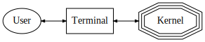
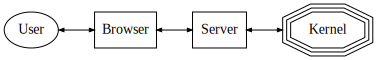
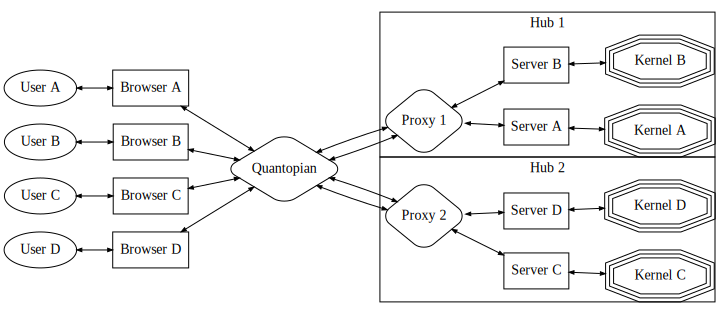

Hosting Notebooks for 100,000 Users
Outline
Demo
Goals and Challenges
Extension Case Studies
User Identity
Notebook Storage
Multiple Hubs
Sharing Notebooks
Demo
Why Jupyter?
- The hard part of writing a trading algorithm isn't writing the algorithm.
- It's researching the ideas behind the algorithm.
- Exploring and Visualizing Data.
- Testing Hypotheses
- Analyzing Results
Project Goals
- Integrate Jupyter UI into an existing web application.
- Support 100,000+ users with minimal downtime.
- Allow users to share notebooks with the Quantopian Community.
Challenges
- Scale
- Financial analyses often RAM and CPU intensive.
- Must spread users across servers to provide enough resources.
- Reliability
- You shouldn't lose work if server hardware fails.
- We shouldn't have downtime during releases.
- Users should be isolated from one another.
- State
- Notebooks
- Kernel Processes
- User Identity
Notebook Architecture


User Identity
Default JupyterHub authenticates via Unix username/password.
- Bad News: we don't want to give users Unix logins.
- Good News: we already have a login system!
- Better News: JupyterHub authentication is pluggable!
Custom Authenticators!
from tornado import gen
from IPython.lib.security import passwd_check
from traitlets import Dict
from jupyterhub.auth import Authenticator
class DictionaryAuthenticator(Authenticator):
users = Dict(config=True, help="Map from username -> password hash.")
@gen.coroutine
def authenticate(self, handler, data):
username, password = data['username'], data['password']
try:
password_hash = self.users[username]
except KeyError:
return None
if passwd_check(password_hash, password):
return username
else:
return NoneQuantopian OAuthenticator
- Redirect browser to
quantopian.com/authorize. /authorize- Ensure user is logged into Quantopian.
- Redirect back to
HUB/oauth_callbackwith "OAuth Code".
/oauth_callback-
Send the code back to
quantopian.com/oauth/token. -
/oauth/tokenreplies with an "Access Token". -
Send token to
quantopian.com/api/get_resource_id/. -
/api/get_resource_id/replies with the user's ID.
-
Send the code back to
Slightly more complex:
Reflections
- OAuth feels a little like overkill for this use-case, but...
- OAuth is standard and widely-available.
- Many good open-source libraries.
Notebook Storage
Jupyter Notebook provides a filesystem interface for storing notebooks.
Filesystem manipulation is abstracted behind by the Contents API.
Contents API
Notebook server implements the Contents REST API.
Translates HTTP verbs into filesystem operations.
| Verb | Action |
|---|---|
| GET | Load Notebook |
| POST | Save Notebook |
| DELETE | Delete Notebook |
...a few extra endpoints for saving/restoring checkpoints.
Contents API Model
{
'content': {
'metadata': {},
'nbformat': 4,
'nbformat_minor': 0,
'cells': [
{'cell_type': 'markdown',
'metadata': {},
'source': 'Some **Markdown**'},
],
},
'created': datetime(2015, 7, 25, 19, 50, 19, 19865),
'format': 'json',
'last_modified': datetime(2015, 7, 25, 19, 50, 19, 19865),
'mimetype': None,
'name': 'a.ipynb',
'path': 'foo/a.ipynb',
'type': 'notebook',
'writable': True,
}Contents HTTP handlers dispatch to a ContentsManager.
Default FileContentsManager translates
requests into reads/writes to/from a local directory.
The ContentsManager class used by the notebook application is configurable!
ContentsManager Interface
ContentsManager.get(path[, content, type, ...]) |
Get a model. |
ContentsManager.save(model, path) |
Save a model to path. |
ContentsManager.delete_file(path) |
Delete the file at path. |
ContentsManager.rename_file(old_path, new_path) |
Rename a file. |
ContentsManager.file_exists([path]) |
Does a file exist at the given path? |
ContentsManager.dir_exists(path) |
Does a directory exist at the given path? |
ContentsManager.is_hidden(path) |
Is path hidden? |
PGContents
PGContents is drop-in replacement for the default FileContentsManager.
It stores notebooks in a PostgreSQL database instead of on the filesystem.
Mini-Demo
Features
- Fully API-Compatible with Default ContentsManager
- Separate Namespace per User
- Multiple Checkpoints per Notebook
- Configurable Maximum File Size
- (Optional) Encryption at rest via the
cryptographyPackage - Combine filesystem and postgres storage via
HybridContentsManager.
Vanity Metrics
- 65,000+ Users Have Created a Notebook
- 220,000+ Total Notebooks
- 310,000+ Total Checkpoints
- Over 450GB of Notebooks!
Scaling Issues
Surprisingly few...Postgres is awesome!
Most significant issue was running out of database connections.
Fixed by adding transparent connection pooling with pgbouncer.
Multiple Hubs
Observation:
Jupyter projects are series of increasingly-elaborate lies.
They present the illusion of talking directly to a kernel, but add layers of indirection.
IPython

Jupyter Console
Jupyter Notebook
JupyterHub

Observation:
We want the illusion of having a single JupyterHub, but with multiple real hubs.
We also want to embed the Hub in another web page.
We render the hub in an iframe to kill two birds with one stone.
Multi-Hub
Hub Discovery

Implementation Notes
Discovery routing logic is very simple. We just choose the hub with the least users.We subclass the base JupyterHub class to add
additional logic for registering/heartbeating with discovery:
class QuantopianJupyterHub(JupyterHub):
@gen.coroutine
def initialize(self, *args, **kwargs):
yield super().initialize(*args, **kwargs)
yield self.do_discovery_start()
# Heartbeat immediately, then register a callback to poll.
yield self.do_discovery_heartbeat()
PeriodicCallback(
self.do_discovery_heartbeat,
1e3 * self.discovery_heartbeat_interval,
).start()@gen.coroutine
def do_discovery_heartbeat(self):
try:
yield self._make_discovery_request('heartbeat')
self.consecutive_failed_heartbeats = 0
except HTTPError as e:
self.consecutive_failed_heartbeats += 1
self.log.exception(
"Heartbeat %d failed",
self.consecutive_failed_heartbeats
)
if self.consecutive_failed_heartbeats >= \
self.consecutive_failed_heartbeats_before_shutdown:
self.log.error("Too many failed heartbeats. Shutting Down.")
self.trigger_graceful_shutdown()
raiseNBExtension
- Adds a Share button to each cell.
- Share button marks the cell as a "showcase cell" in notebook metadata, then sends a POST with notebook content to the server.
Server Extension
- Adds a request handler to the notebook server.
- Request handler receives POST from nbextension, nbconverts to HTML, and uploads HTML + .ipynb to S3.
Conclusions
Jupyter Applications are amazingly extensible and customizable.
Extensions I didn't have time to talk about:
- Memory Monitor Extension
- Interactive DataFrame Widget
- Custom Completions
- Custom Kernel Restarter
- Custom Notebook Server Spawner
- ...
Conclusions
State is the enemy of robustness and scalability.
Lots of problems become way easier if we don't have to worry about state.
Conclusions
Jupyter is built on a throne of lies.
Appropriate use of indirection allows us to compose complex applications from simple parts.